插件 / Plug-in

startMove.js
一款运动插件，支持多种运动形式
完成时间：2015年-08月

waterFlow.js
基于JQuery实现的瀑布流插件，支持动态多列瀑布流效果
完成时间：2015年-08月
特效 / Effect
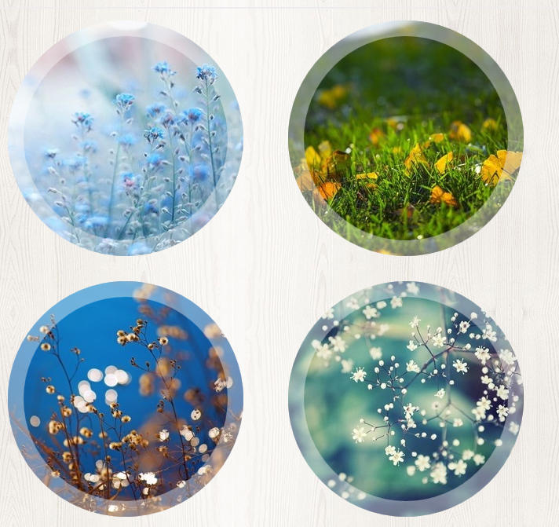
CSS实现圆形变换
遮罩与圆形、字体的动画渐入渐出效果
完成时间：2015年-08月
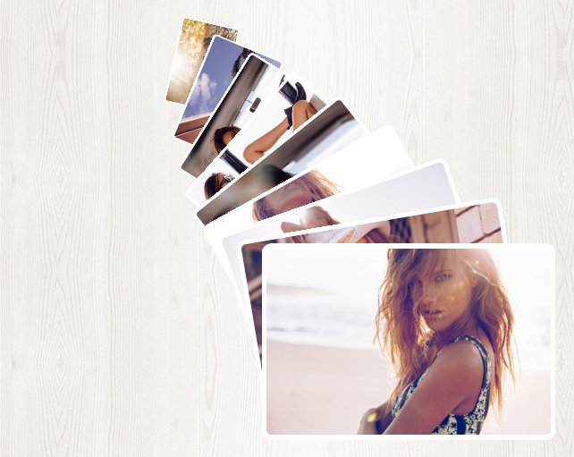
常见相片展开效果
九种非常常见的相片展开层叠效果
完成时间：2015年-08月
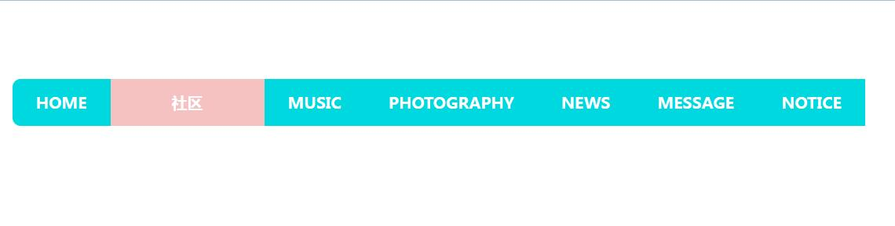
导航栏滑入滑出效果
导航栏子菜单从上部移入移出效果
完成时间：2015年-08月
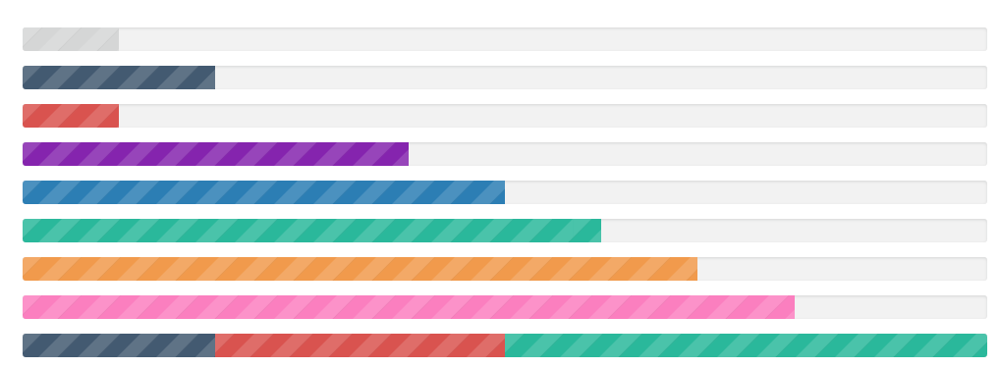
CSS实现彩色进度条
使用CSS实现的彩色进度条效果
完成时间：2015年-07月
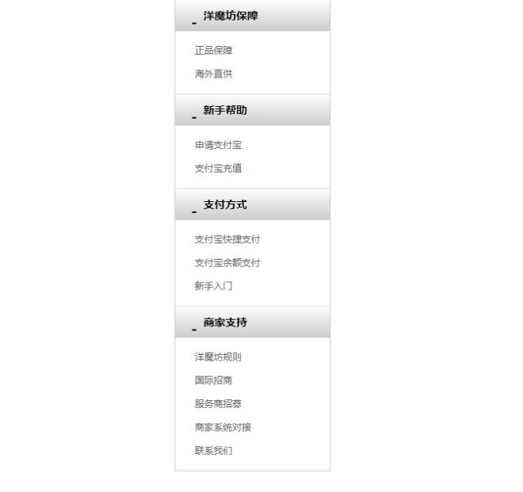
折叠式导航菜单
点击导航头部可以折叠展开子菜单
完成时间：2015年-07月
自动滚动式焦点图
可以自动或者手动控制焦点图轮播
完成时间：2015年-07月
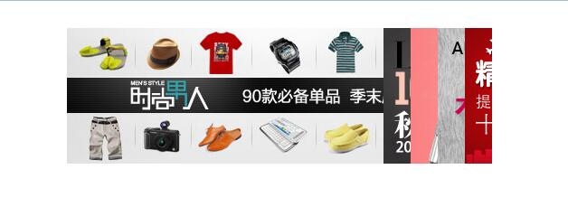
各类焦点图滚动效果
基于JS和JQuery版的各种焦点图实现
完成时间：2015年-07月
网页 / Web Page
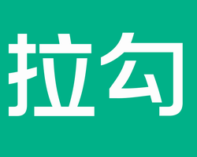
仿拉勾招聘信息网全站
模仿拉勾招聘信息网制作的招聘网站
完成时间：2015年-07月~至今
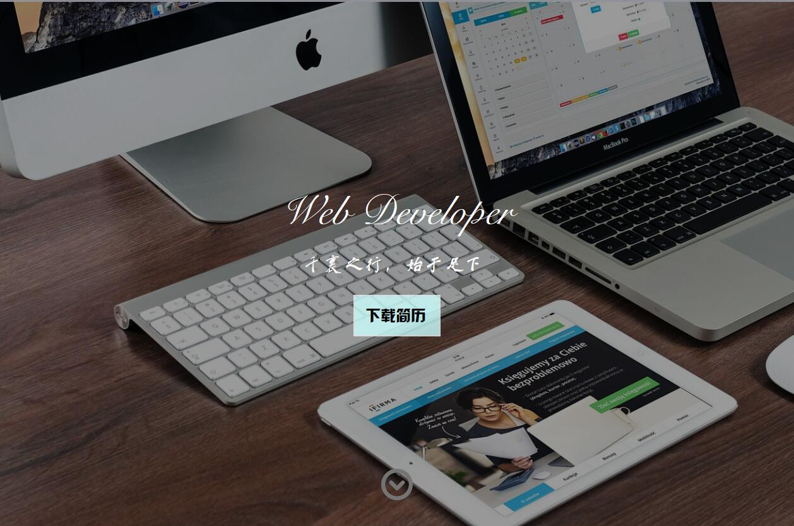
个人作品展示网站
展示记录我的前端学习的足迹，展示真实的自我
完成时间：2015年-09月
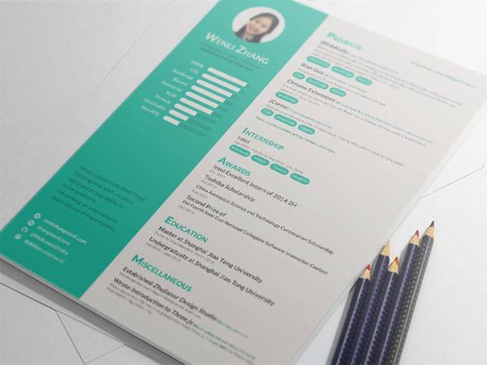
个人简历
梦想还是要有的，万一实现了呢？
完成时间：2015年-09月
旅游交流会官网首页
CSS实现仿制的旅交会官网首页
完成时间：2015年-08月
遮罩二维码
鼠标移入时出现遮罩层并显示二维码
完成时间：2015年-08月
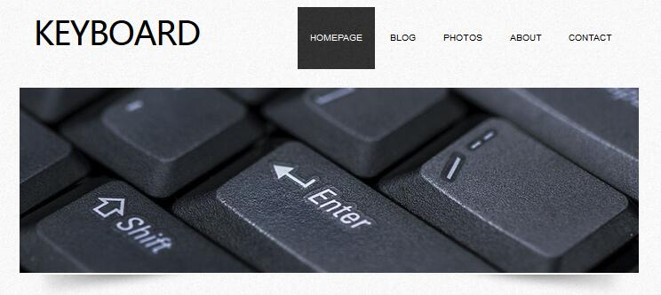
KeyBoard推广网站
仿照国外的一个简洁的键盘推广网站
完成时间：2015年-07月
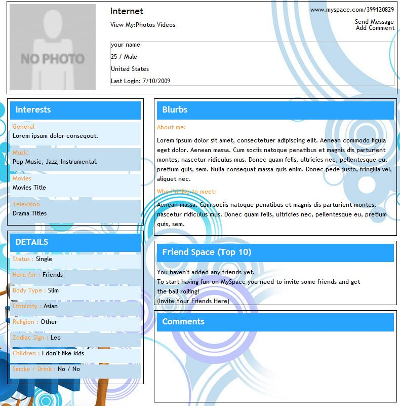
个人主页网站
一个简单的个人主页，我的第一个前端网站
完成时间：2015年-07月